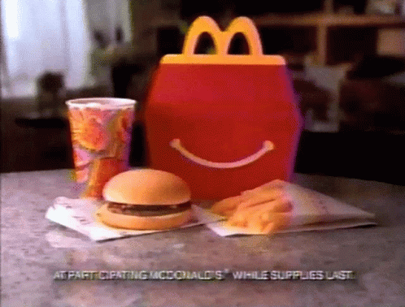

DIRECT ALL COMPLAINTS TO MY PLACE OF WORK
160 Main St
Kimball, TN 37347
+1-423-837-7592
I WORK AT MCDONALDS ON TUESDAYS
McDonald's Corporation, doing business as McDonald's, is an American multinational fast food chain. As of 2024, it is the second-largest by number of locations in the world, behind the Chinese chain Mixue Ice Cream & Tea. Brothers Richard and Maurice McDonald founded McDonald's in San Bernardino, California, in 1940 as a hamburger stand. They soon franchised the company. The Golden Arches logo was introduced in 1953. In 1955, the businessman Ray Kroc joined McDonald's as a franchise agent; he bought the company in 1961. In the years since, it has expanded internationally. Today, McDonald's has more than 40,000 restaurant locations worldwide, with around one-quarter in the US.
Other than food sales, McDonald's generates income through its ownership of 70% of restaurant buildings and 45% of the underlying land (which it leases to its franchisees). In 2018, McDonald's was the world's second-largest private employer after Walmart; most of its 1.7 million employees work in the restaurant's franchises. McDonald's bestselling licensed items are their French fries and Big Mac hamburgers; other fare includes cheeseburgers, chicken, fish, fruit, and salads. McDonald's has been criticized for its foods' nutrition, animal welfare and low worker wages.